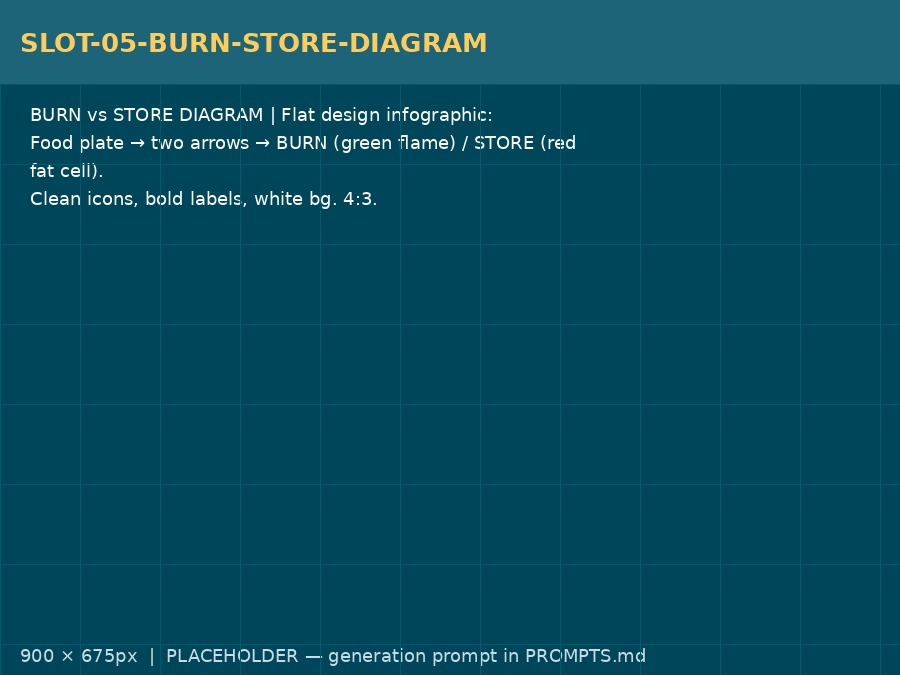
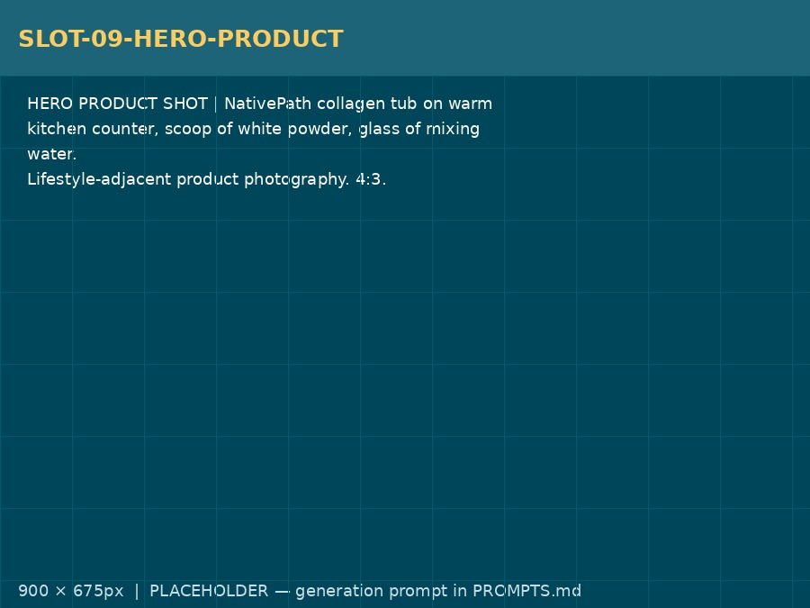
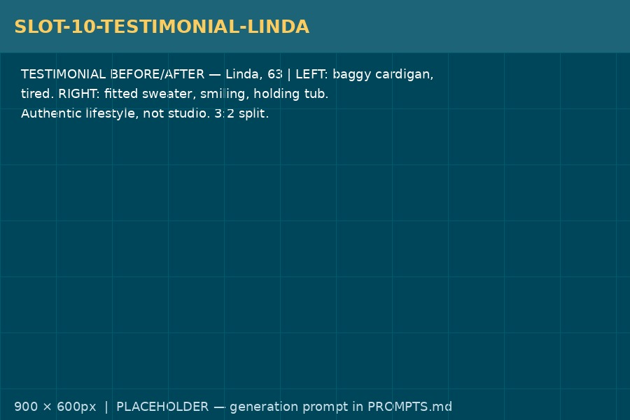
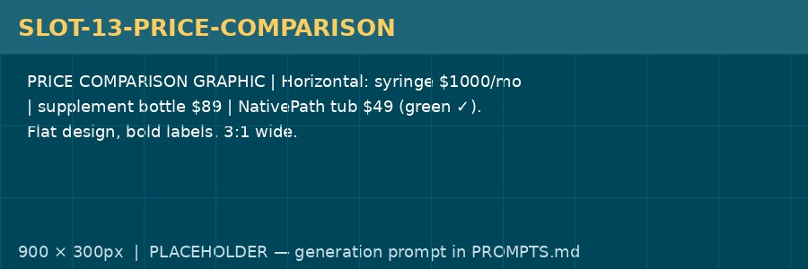
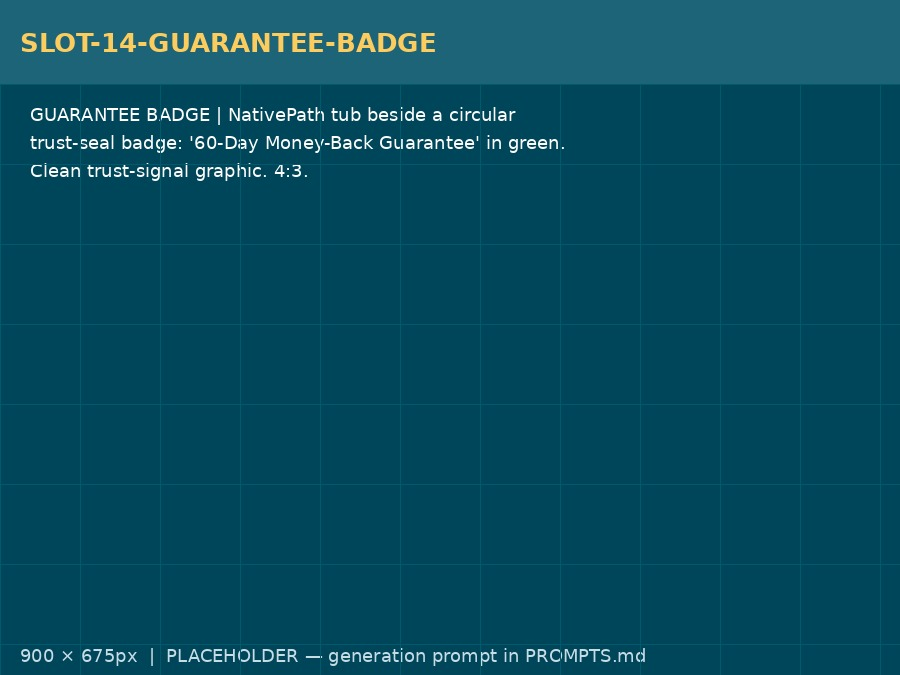

You've seen the posts. Women in their 50s, 60s, and 70s, quietly adding one scoop to their morning coffee and suddenly — joints that move again, hair that shows up in the before photos, skin the hairdresser keeps commenting on. Here's the part nobody explains: collagen only does that if you give your body the two types it actually uses. Most products on the market bury those two types under three others your body barely needs. This is the formula that uses the right ones. Nothing else.
Let me guess.
You've tried everything. The multi-collagen blends. The five-type pills. The celebrity brand that turned its tub to cardboard.
The jar that was supposed to have 25 scoops but didn't.
You eat more carefully than you did at forty. You walk more than your husband ever has. You read every label, count every gram, and track every review before you spend a dollar on anything.
And your joints still wake up stiff every single morning.
Then your doctor says the four most infuriating words in the English language: "Try to walk more."
I know exactly how much that stings to hear.
Because those are the same words I once said to my sister Diane. And I have never been more wrong about anything in my life.
So let me say the thing no one has said to you yet.
It was never your effort. It was never your fault.
Your body was running on the wrong signal. And until you understand why, the right behavior and the wrong formula will never get you there.
Lately, your whole feed has been women whispering about the same thing: collagen in the morning coffee. Something about the bones, the hair, the skin. You've heard it enough times it's starting to feel real.
Here's what everyone keeps leaving out.
Collagen only works if your body gets the two types it actually needs, in the form it can absorb, at the dose the research actually used.
Get one of those wrong, and you feel nothing.
Get all three right, and the results come fast enough you'll have to slow yourself down.
I'm going to show you exactly why that is. Because I spent almost two years figuring out the answer — and my sister Diane is the reason I kept going.
Read this before you spend another dollar on collagen.
My name is Claire Harmon.
I'm not a celebrity. I'm not an MD on a stage selling my own supplement line. I'm a nutritional researcher and a formulator who spent the better part of her career reading studies most people never see.
And for most of my life, I was the lucky one.
The sister whose joints never ached. Whose hair never thinned. Who looked the same in every photo. I genuinely thought that was because of something I was doing right. Some discipline other people just hadn't found yet.
So when my sister Diane hit fifty-seven and menopause took her apart from the inside — joints that screamed in the morning, hair that came out in the brush by the handful, a DEXA scan that came back at osteopenia — I told her the same thing her doctor told her.
"Eat more protein. Walk more. Take better care of yourself."
I need to confess that, because it's the whole reason I'm writing this.
I judged my own sister. I quietly believed that if she just tried harder, she'd get there.
I was wrong. Not a little wrong. Completely, shamefully wrong.
And the day I finally stopped believing that was the day I started looking for the real answer.
What I found in those research files is the reason those collagen posts you keep seeing are real — and why most of the products behind those posts are getting it backwards.
Diane is my younger sister. She raised two kids, worked a full schedule for thirty years, cooked most of her own food, and never once let herself slide into the habits she watched other people develop.
She was the one who brought salads to family dinners.
She was the one who took the stairs.
And there she was at fifty-seven — hands so stiff she couldn't open a jar without wincing, hair thinning faster than she could hide it, scared by a number on a scan that her doctor mostly shrugged at.
One afternoon she looked at me over the phone and said, "Claire, I AM taking care of myself. I swear to God, I am."
So I decided to find out if she was right.
For three weeks I tracked everything. Her meals, her protein, her activity. I tracked mine too. I wrote it all down.
I will never forget the moment I looked at those numbers side by side.
She wasn't making excuses. She wasn't lazy. She wasn't undisciplined.
Something inside her body was processing the same inputs in a completely different way than mine.
No amount of "walking more" was ever going to fix a problem nobody had correctly named.
I went looking for the name.

It took months of going through research most people never read.
Then one night — kids asleep, husband asleep, coffee I'd poured sitting cold on the desk beside me — I found it.
A dermatology review on the exact mechanism that decides what menopause does to a woman's connective tissue. The switch inside the body that controls whether collagen gets made or not.
The paper had a line I read five times.
It said women can lose up to 30 percent of their skin collagen in the first five years after menopause — and that loss is more closely correlated with how long estrogen has been absent than with how old she actually is.
I sat there with my heart pounding.
Estrogen was the signal. Estrogen is what told the body: rebuild. When estrogen left, the signal went SILENT. Not slow — SILENT. Like a factory where the orders stopped coming in.
That was Diane.
That was every woman who was doing everything right and still losing ground. Not because her effort failed. Because her rebuild signal had gone quiet.
What I read next explained not just why she was stuck, but exactly what it would take to turn it back on.
And it's simpler than any supplement ad will ever admit.
Here is what is actually happening. Plain and simple.
Every night, while you sleep, your body runs a repair cycle. Collagen breaks down through daily living — movement, stress, time. The question is whether your body rebuilds it.
That decision isn't random. A signal makes it.
When estrogen is present, it acts as the on-switch. Your fibroblasts — the cells that manufacture collagen in your skin, your bones, your connective tissue — receive that signal and do their job. Collagen gets made. Things get rebuilt overnight. You wake up better than you went to bed.
That is what the "healthy" women have. They're not just eating more cleanly. Their bodies are running the REBUILD cycle while they sleep.
But when estrogen drops at menopause, the signal goes SILENT.
The fibroblasts are still there. They're capable of working. But the order never comes in.
So the daily breakdown keeps happening — joints wear, skin thins, hair follicles get weaker batches of structural protein — and nothing comes in to replace it. Your body isn't failing. Your body is waiting for a signal that stopped arriving.
Joints that wake up stiff every morning. Hair that ends up in the brush and doesn't grow back. Skin that stopped bouncing back from anything. Bones getting thinner on a scan you fought your doctor to order.
Same input. No rebuild. Every time.
Now you can see why "eat more protein" never fixed anything.
You weren't deficient in effort. Your body was running SILENT when it should have been running REBUILD. And there is a second problem that makes it worse.
Here's what none of the collagen ads will tell you.
Your body doesn't need all types of collagen equally. Type I and Type III make up the vast majority of the collagen in your skin, your bones, and your connective tissue — the tissues that are actively losing ground at menopause. Every gram of collagen that goes to other types is a gram not going where your body is depleting fastest.
Spread the dose thin enough, and the body never gets enough raw signal to flip from SILENT to REBUILD.
And it can be flipped back. I've watched it happen.
Once I understood what was actually happening, the question got simple.
How do you restart a rebuild signal that went SILENT?
There are only four approaches anyone has ever tried. Let me save you the years.
Way #1: Take the prescription bone-loss medication.
She goes on Fosamax or Boniva or Forteo. The medications slow the breakdown of existing bone — they are not building new collagen. They don't address the signal. They don't help joints, hair, or skin. And her mother took Forteo and still broke bones anyway. This is a management strategy, not a rebuild.
Way #2: Trust that HRT will handle everything.
Hormone therapy restores estrogen, and for many women it genuinely helps — joints, mood, energy. But a significant number of women find it didn't move the needle on joints, hair, or skin the way they hoped. And for women who can't take it, or who are years past menopause, the estrogen window is different. Collagen sits alongside HRT. It is not a replacement. But for the woman whose joints didn't come back on hormones alone — "HRT didn't work for my joint pain. Collagen did" — this is the missing piece.
Way #3: Take a multi-collagen capsule with five or ten types.
Maybe you already tried this. A year or two of pills with Types I, II, III, V, and X. Chicken cartilage, fish scales, eggshell. Judy L. describes it perfectly: "In the couple of years I have been taking [a pill supplement that supposedly contains 5 types of collagen], I have not seen any improvement in my hair, skin, bones, nails, etc." Of course she didn't. The types her body needed most — I and III — were diluted across types her skin and bones barely use. And capsules rarely deliver more than 3 grams per serving. The studies that showed joint and bone benefit used 5 to 10 grams a day. She was dosing at a third of the research threshold.
Way #4: Give your body Types I and III directly, hydrolyzed to absorb, dosed correctly.
Maybe you've already tried "just collagen powder" on its own and felt nothing. Of course you might have — if the type was wrong, the form wasn't hydrolyzed properly, or the dose was under the threshold. One thing wrong and the whole thing collapses.
But all three factors right, at the same time? That is the only approach that ever worked for Diane. And for every woman I've watched come back since.
And it's the one thing the collagen trend never explains.
The formula has three requirements. Each one does one job.
Miss one, and the signal never fully turns on. That's why collagen pills and multi-blends do nothing for most women.
Requirement One. The right TYPE. (Types I and III — nothing else.)
Your skin, your bones, your connective tissue, your hair follicles — the tissues losing ground right now — run on Type I and Type III collagen. Those are the structural proteins your fibroblasts and osteoblasts are waiting to receive. Studies on bone mineral density and skin collagen used Type I and III bovine collagen. The chicken cartilage (Type II), the fish scales (Type V), the eggshell (Type X) — different tissues, different roles. Every gram that goes there is a gram that didn't go to the REBUILD your skin and bones are waiting for.
Requirement Two. The right FORM. (Hydrolyzed peptides — not gelatin, not unprocessed powder.)
Collagen is a massive protein molecule. Your body cannot absorb it whole. When it's hydrolyzed correctly — broken into the specific small fragments called Pro-Hyp peptides — those fragments are absorbed into the bloodstream. Studies have detected them reaching skin, cartilage, and bone. That's the rebuttal to "it just breaks down in your stomach." It does break down. Those breakdown products ARE the signal. Poor hydrolysis produces larger fragments. The signal never arrives.
Requirement Three. The right DOSE. (10 grams minimum, daily.)
The clinical trials that showed bone and joint benefit used 5 to 10 grams of collagen peptides per day. One scoop of a properly hydrolyzed powder delivers 10 grams. A capsule supplement typically delivers 1 to 3 grams. The woman who "felt nothing" from collagen pills was often simply dosing at a third of the research-backed threshold. That's not a collagen failure. That's a delivery failure.
Right type. Right form. Right dose. That is the entire answer.
Not a capsule. Not a blend of five types. Not a trendy recipe that doesn't tell you how much to take.
Three requirements, met together, every single morning.
But knowing the three requirements was the easy part. Getting them to work in real life almost broke me.
Maybe you're already thinking what I thought.
"If it's just Types I and III, hydrolyzed, 10 grams a day — I'll figure it out myself. Buy a bulk powder. Read the label. Done."
I tried that first. It was not done.
The type is a knife edge. Most powders labeled "bovine collagen" don't specify which types are in what proportion. The ones that do are often blending I and III with other types to cut cost. To get a clean I-and-III source at 10 grams per serving, you'd need to source from a grass-fed supplier, verify the fractionation by type, and trust the mill's labeling — which, if you've ever read a 1-star review from a woman who counted 22 scoops in a "25-serving" container, you know how far brand trust gets you.
The form is the hardest part. "Hydrolyzed" is a spectrum, not a standard. The degree of hydrolysis — how small the peptide fragments get — varies by temperature, enzyme, and processing time. A powder that says hydrolyzed on the label may still produce fragments too large to reach the bloodstream as the Pro-Hyp signal. You cannot see this in the powder. You cannot taste it. You cannot test it at home.
The dose is a capsule trap. Even after finding the right type in the right form, I would have needed to take 4 to 6 gelatin capsules every morning to hit 10 grams. And capsule brands almost never use pharmaceutical-grade hydrolysis because the capsule size limits how much peptide they can pack in. The pill approach is structurally incapable of delivering what the research used.
Even with all three right, they have to arrive at your body at the same time, every day, without gap.
So I turned my kitchen into a sourcing project.
For almost two years I sourced, tested, and ran every format I could find on myself. I tested grass-fed South American bovine from three different mills. I tested different hydrolysis grades. I tested every serving size from 5 to 20 grams. I kept a log.
Most mornings I felt exactly what she felt. Nothing.
Then one morning, about four months in, I felt it. My hands moved without me noticing them move. No inventory. No accounting. Just… motion.
I made the same batch the next morning to make sure. And the next.
It worked every single time.
That was the formulation. Not "just collagen powder."
An exact source. An exact grade. An exact dose. Every morning.
That's what I finally handed Diane.
I gave Diane that exact formulation. One scoop in her morning coffee, stir until dissolved. No pills. No blends. Just this.
She called me three weeks later. Not frustrated this time.
"Claire… it's not quiet anymore."
That constant overnight silence. The joints that used to ache all the way through until noon. It had just stopped.
Then her DEXA numbers started moving. Not slowly.
Diane wasn't doing anything different. Her body had simply started rebuilding what it was depleting, instead of running SILENT on both ends.
She started going to the hairdresser again. Her stylist asked what she had changed. Diane hadn't changed anything else.
I told her to check in at six months. At six months, she called and said her follow-up scan had moved in the right direction for the first time since menopause. Her doctor told her to keep doing whatever she was doing.
Six months after she started, Diane was back on the floor playing with her grandkids.
But the scan improvement isn't the part that makes me cry. It's this.

For the year before she started, Diane stopped letting anyone photograph her. She stood at the back of every family group shot or found something to do in the kitchen. She didn't say why. She didn't have to.
Now look at her.
She's in every photo. Front row.
Word got around the way it always does among women who talk to each other.
I ended up sourcing and formulating for dozens of women in her circle. Then for hundreds more who reached out after those women shared what they were doing.
Then, a few years later, I saw the same formula — watered down with added types, under-dosed per serving, packaged with a celebrity name — on the shelf at three times the price Diane was paying.
So I decided to do something about it.

I couldn't keep hand-sourcing and custom-formulating for every woman who reached out. So I did it properly.
I took the exact specification I'd spent nearly two years verifying to a GMP-certified facility in the United States.
Types I and III only — to rebuild what menopause depletes fastest. Hydrolyzed to the peptide grade that absorbs. Ten grams per scoop — the research-backed dose, not a capsule-sized fraction of it.
Sourced exclusively from grass-fed, pasture-raised cattle. No blends. No types added to pump up the label count. No flavors, no fillers, no sweeteners, no seed oils, no artificial anything.
In the original powder form, the way the formula was always meant to be used.
One scoop in your coffee, your tea, your water. Stir once. Give it three seconds. Done.
I call it NativePath Grass-Fed Collagen.
Let me be clear about what it is NOT.
It is not a multi-collagen blend. It is not a capsule with 2 grams per serving. It is not a celebrity-branded label on the same generic powder you can get anywhere.
It is not one of the single-type tricks or multi-type blends that did nothing for Diane or for the women who reached out after her.
It's the complete formula — the real one — that covers all three requirements your body needs, in order.
And I priced it for real women who are serious about rebuilding. Not for a celebrity's markup on a formula they had no part in developing.
Here are three more women who took the same formulation.
"I have been using the Collagen for almost a year and the results are amazing. My skin looks great, my hair is thicker and my nails are actually growing. I no longer have pain in my hips. I use two scoops each morning in my coffee. No one believes that I will be 80 years old in three months."
"I love this product. I have been using it for several months and have seen a dramatic change in my hair and nail growth. I have never been able to have any length in my fingernails. I actually have nails now that I must file. I have worn my hair long all of my life but it has thinned over the years. I will be 76 in February and my hair is growing faster than at any time in my life. I definitely recommend trying this."

"I appreciate that using this form of collagen replaces the three separate pills I was taking daily. In the couple of years I was taking a pill supplement that supposedly contained 5 types of collagen, I saw no improvement in my hair, skin, bones, nails, or anything. Switching to a pure powder that I could actually measure made all the difference."

Let's talk about what this actually costs.
The prescription route — Fosamax, Boniva, Forteo — runs anywhere from $100 to $200 per month, depending on your insurance. Every month. Slowing breakdown, not rebuilding. That's not a rebuild. That's a holding pattern.
The celebrity-branded collagen — built on marketing, not on sourcing or hydrolysis grade — runs $40 to $60 or more per container. About $1.43 to $1.84 per serving for something with no specification on type ratios or peptide grade.
Everything Diane spent in the two years before she found the real formula: jars with types she didn't need, capsules that couldn't deliver the dose, blends that just moved the money from her pocket to theirs. For most women, hundreds of dollars for nothing.
NativePath Grass-Fed Collagen was going to be priced at $37.99 for a single jar. That's the real retail price.
But I didn't build this for a markup. I built it for Diane. And I built it for you.
So I'm releasing it right now at the 3-jar Stock Up & Save price of $27 per jar — that's $81 total, with FREE shipping and a FREE milk frother included.
When you order 3 jars today, your frother comes at no extra charge. The frother alone retails for $25. It ensures your collagen dissolves completely into hot coffee every morning without a single clump.
Because this is the launch price and I'm producing in honest, verified batches, I can't promise this offer holds. When the promotional window closes, the price goes back to $37.99 per jar. That is when this offer is gone.
I know you have been burned before. I know exactly what it feels like to spend money on something that promised a rebuild and delivered nothing.
So I am taking all the risk off you.
Try NativePath Grass-Fed Collagen for a full 365 days. Use every scoop.
If your joints don't feel more like themselves, if your hair doesn't look like it's doing something again, if you don't notice a difference in the skin on your hands, your nails, any of the things you've been watching — email my team and we'll refund every penny.
Used the whole jar. No questions. No fight.
You keep the results, or you keep your money. The only thing you can't do is stay in the quiet.
That's not a marketing line. That's a promise from the researcher who formulated it.
Use the entire product. If you are not satisfied for any reason, contact us within 365 days of delivery and we will refund your purchase, no questions asked. You keep the free frother either way. No return-window games. No fine print. Your only risk is doing nothing.
It's simple.
Tomorrow morning: one scoop in your coffee, stir once, done. Three seconds.
Then get on with your day and let your body do what it hasn't been doing.
Here's the truth no one likes to say. This doesn't fix itself.
Another six months passes. Another morning inventory — hands, knees, the mirror. Another family photo you step to the back for.
The quiet doesn't stay the same. It creeps. And the distance between the life you want and the body you're working with creeps with it.
The saddest words I hear from women in this situation are always the same: "I wish I had started sooner."
That doesn't have to be you. Not today.
Picture it. The quiet is gone. Joints that moved through the night and came out the other side ready. Hair your hairdresser comments on — not to be polite. Skin that stopped losing ground on every bump and scrape. A DEXA number that went in the right direction for the first time in years.
Being in the front row of the photo. Not finding something to do in the kitchen.
That's not vanity. That's you, coming back.
You have given your body to decades of work, to your family, to everyone who needed something from you. It is okay to give it something it needs.
This is the formula that gives it back to you. The real one, done right, sourced correctly, from the researcher who spent two years making sure it worked.